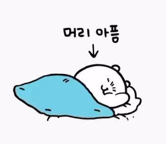
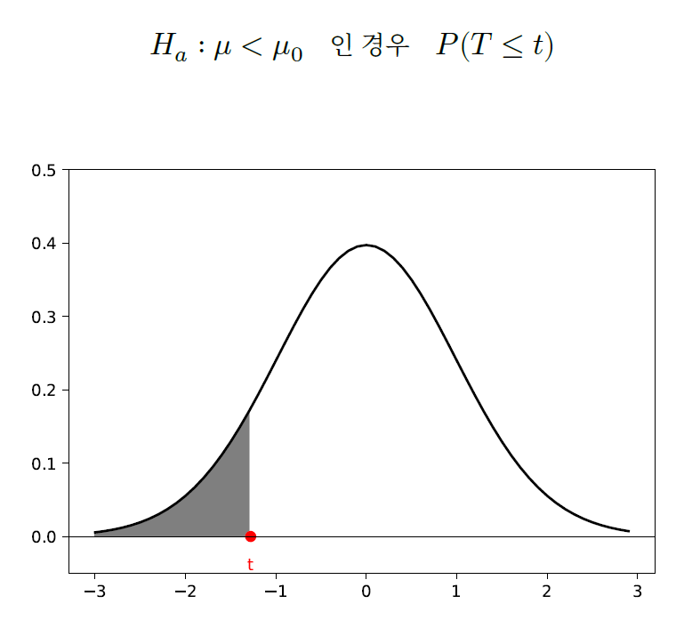

import matplotlib.pyplot as plt
import numpy as np
from scipy.stats import t
from scipy.stats import norm
from scipy import stats
ADP 교재 p.57 문제
슬통 자동자는 매해 출시되는 신형 자동차의 에너지 소비효율 등급을 1등급으로 유지하고 있다.
신형 모델이 에너지 소비 효율등급 1등급을 받을 수 있을지 검정하려한다.
한국 자동차 평가원에 따르면 1등급의 기준은 평균 복합 에너지 소비효율이 16.0 이상인 경우 부여한다고 한다.
다음은 신형 자동차 15대의 복합 에너지 소비효율을 측정한 결과이다.
15.078, 15.752, 15.549, 15.56, 16.098, 13.277, 15.462, 16.116, 15.214, 16.93, 14.118, 14.927, 15.382, 16.709, 16.804
표본에 의하여 판단해볼때, 현대자동차의 신형 모델은 에너지 효율 1등급으로 판단할 수 있을지 판단해보시오. (유의수준 1%로 설정)
검정을 위한 가설을 명확하게 서술하시오.
귀무가설: 𝐻0 ∶ 𝜇0 >= 16.0
대립가설: 𝐻𝐴 ∶ 𝜇 < 16.0
이러한 경우, 아래 그림과 같은 단측검정을 해야 한다.

검정통계량을 계산하시오.
# 데이터
x = np.array([15.078, 15.752, 15.549, 15.56, 16.098, 13.277, 15.462, 16.116, 15.214, 16.93, 14.118, 14.927, 15.382, 16.709, 16.804])
# 표본 크기
n = len(x)
# 표본 평균
x_bar = np.mean(x)
# 표본 표준편차
x_std = np.std(x, ddof = 1)
# t값 찾기: (X_bar - 𝜇0) / (s / sqrt(n))
t_stat = (x_bar - 16) / (x_std / np.sqrt(n))
print("표본 크기는", n)
print("표본 평균은", round(x_bar, 3))
print("표본 표준편차는", round(x_std, 3))
print("t 값은", round(t_stat, 3))표본 크기는 15
표본 평균은 15.532
표본 표준편차는 0.98
t 값은 -1.85p‑value을 구하세요.
p_value = t.cdf(t_stat, df=n-1)
print("p-value은", round(p_value, 3))
print("결론: p-value", round(p_value, 3), "> 유의수준 0.01로 귀무가설을 기각할 수 없음")p-value은 0.043
결론: p-value 0.043 > 유의수준 0.01로 귀무가설을 기각할 수 없음슬통자동차의 신형 모델의 평균 복합 에너지 소비효율에 대하여 95% 신뢰구간을 구해보세요.
a = round(x_bar + t.ppf(0.975, df=n-1) * x_std / np.sqrt(n), 3)
b = round(x_bar - t.ppf(0.975, df=n-1) * x_std / np.sqrt(n), 3)
print("95% 신뢰구간은 (", b, ",", a, ")")95% 신뢰구간은 ( 14.989 , 16.075 )